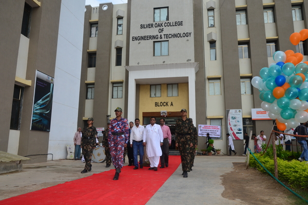

MY thought corner
"I heard about a Samarth high school in Valsad, where students had to pass
a certain number of courses to graduate, and if they didn’t pass a
course, they got the grade “Not Yet”. And I thought that was
fantastic, because if you get a failing grade, you think, I’m
nothing, I’m nowhere. But if you get the grade “Not Yet” you
understand that you’re on a learning curve. It gives you a path
into the future. “Not Yet” also gave me insight into a critical
event early in my career, a real turning point. I wanted to see
how children coped with challenge and difficulty, so I gave
10-year-olds problems that were slightly too hard for them. Some
of them reacted in a shockingly positive way. They said things
like, “I love a challenge” or “You know, I was hoping this would
be informative”. They understood that their abilities could be
developed. They had what I call a growth mindset. But other
students felt it was tragic, catastrophic. From their more fixed
mindset perspective, their intelligence had been up for judgment
and they failed. Instead of luxuriating in the power of yet, they
were gripped in the tyranny of now. So what do they do next? I’ll
tell you what they do next. In one study, they told us they would
probably cheat the next time instead of studying more if they
failed a test. In another study, after a failure, they looked for
someone who did worse than they did so they could feel really good
about themselves. And in study after study, they have run from
difficulty. Scientists measured the electrical activity from the
brain as students confronted an error. On the left, you see the
fixed mindset students. There’s hardly any activity. They run from
the error. They don’t engage with it. But on the right, you have
the students with the growth mindset, the idea that abilities can
be developed. They engage deeply. Their brain is on fire with yet.
They engage deeply. They process the error. They learn from it and
they correct it." - Smeet G8
education
Education helps a person to get knowledge and improve confidence
in life. It can help you improve in your career and your personal
growth. An educated person can become a great citizen in society.
It helps you to take the right decisions in life.

Collage education
One of the most interesting stages in life that gives you an
opportunity to explore is the ‘college phase’. Life at college
is the time when the teenage years end and we all dive deep
into the ocean of new beginnings and possibilities. This
golden period better equips you for all the challenges you’ll
face in life and creates a strong foundation of knowledge.
Learn more
SEcondary education$
Bhakti International School presented unprecedented scale and
diversity of opportunity. My two years of phenomenal teachers
across the disciplines pushed me to expand, challenge, and
adjust my worldview. My experience of self learning with
classmate showed me the power of empathetic leadership and
expanded my artistic comfort zone. My tenure throwing major,
campus-wide events validated that quality stems from attention
to detail. My engagement in BIS's tech & innovation
initiatives exercised my creative muscle, sparked my obsession
with design, and strengthened my tolerance to adversity. My
internships at
wipro and
Arista and
invest money and value in online courses helped me discover my
love for building products that make people's lives better.
BIS showed me what I love to do, gifted me with a love for
learning, and surrounded me with a wealth of inspiring peers.
Learn more